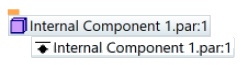

Create Internal Component command bar
- Options
-
Displays the Create Internal Component Options dialog box, so that you can adjust the settings for creating the internal component.
The options that are available depend on your initial selections when you started Create Internal Component command.
- Component Type
-
Specifies the type of internal component to create within the context of the assembly:
-
Part—Creates a part internal component.
-
Sheet Metal—Creates a sheet metal internal component.
-
Assembly—Creates an assembly internal component.
-
- Name
-
Assigns a name to the internal component, which will be displayed in PathFinder, for example, Internal Component 1.
You can define any naming convention. Each additional internal component you create using the naming convention automatically increments by 1.
- Add to
-
Selects the assembly document where you want to create the internal component.
The default document is the top-level assembly you are editing, but you can select any internal component assemblies that exist at the same level.
- Ground
-
Specifies whether the newly created internal component is grounded or not. You can apply relationships later using the commands in the Relate group on the ribbon.
If you select this option, a Ground Relationship is defined at the bottom of PathFinder. Click the internal component in PathFinder to see it.

- Material
-
Specifies the material of a new part or sheet metal internal component.
This option is not available for an assembly internal component.
- Edit In-Place
-
When selected, opens the newly created part or sheet metal internal component for editing in Internal Component Modeling mode when you click Accept, so you can add bodies and create new features within the context of the assembly.
If not selected, then an empty internal component is created.
This option is not available when you create an assembly internal component.
- Accept (check mark)
-
Creates the internal component and lists it in PathFinder.
- Cancel
-
Clears the selection.
How do I
Create an internal component in an assemblyApply a material to internal components
Publish internal components
Learn more
Working with internal componentsPublishing internal components
Look up more details
Create Internal Component commandCreate Internal Component Options dialog box
Activate Internal Component command
Publish Internal Components command
Publish Internal Components dialog box